|
|
HELP FIND THE FOLLOWING LOCATIONS
PAGE 15
RANDALL AND
HOPKIRK [DECEASED]: A Sentimental Journey
(Leslie Norman: July 1968)
Tony drives Dandy in the Limousine (back projection of Tony driving).
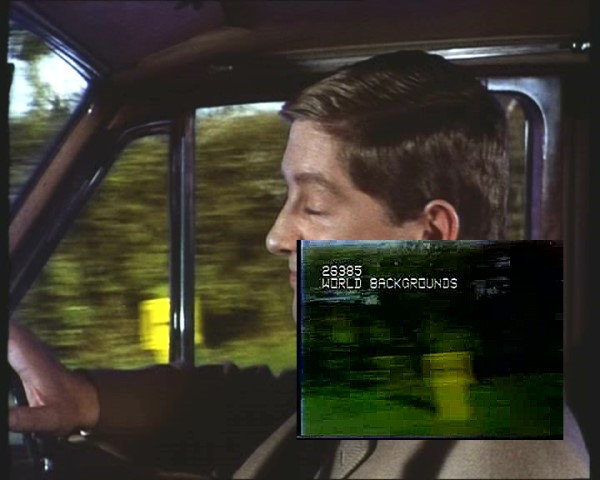
 This
is World backgrounds plate 26385
also seen in two other episodes.
Here are the highlights
slowed down.
This
is World backgrounds plate 26385
also seen in two other episodes.
Here are the highlights
slowed down.
 Also
seen in DEPARTMENT S:
Who Plays the Dummy?
(John Gilling: Autumn 1968)
Also
seen in DEPARTMENT S:
Who Plays the Dummy?
(John Gilling: Autumn 1968)
RANDALL AND HOPKIRK [DECEASED]:The Trouble with Women
(Cyril Frankel: October 1968)
Unknown 1 -
Alan Corder holds Jeff at gunpoint while Susan Lang
drives Corder's limousine to a secluded spot in the country.
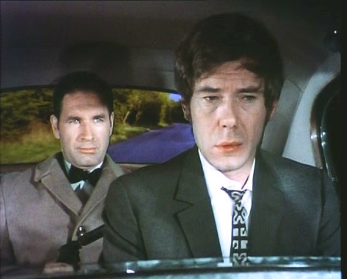
 This is
World backgrounds back plate BP684
or
BP683.
This is
World backgrounds back plate BP684
or
BP683.
Also seen in:
RANDALL AND
HOPKIRK [DECEASED]: But What a Sweet
Little Room (Roy Ward Baker: June 1968)
Unknown 1 -
Arthur de Crecy drives
Anne Fenwick to his 'cottage in the country' in his Peugeot.
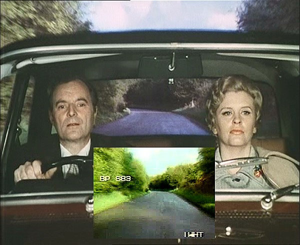
RANDALL AND
HOPKIRK [DECEASED]: The Ghost Talks
(Cyril Frankel: July 1969)
Unknown
1 -
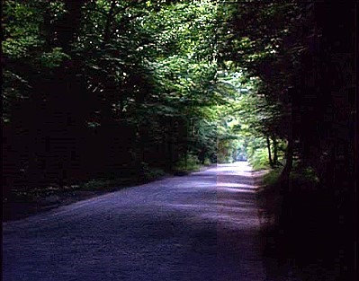
RANDALL AND
HOPKIRK [DECEASED]: The Smile Behind
the Veil(Jeremy Summers: Autumn 1968)
Unknown 1 -
Marty blows a branch over
the Gouldhurst sign to misdirect Jeff in his Vauxhall.
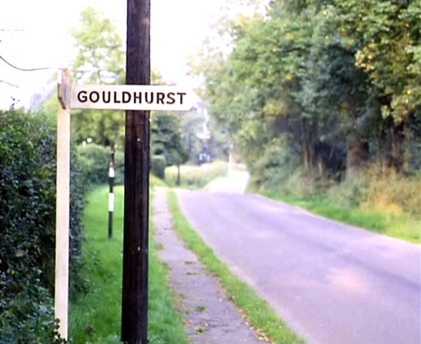
Unknown 2 -
Hooper and
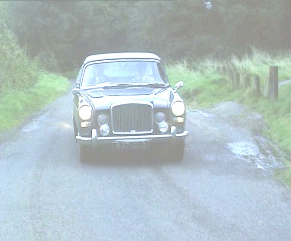
B24: Stags
End, Gaddesden Lane, Hemel Hempstead - Hooper
Jeff is parked
up, consulting a map, opposite the Stonehurst entrance. Brooks leaves
in his
Hillman Minx.
(Identified by Bryn Willetts, August 2021)
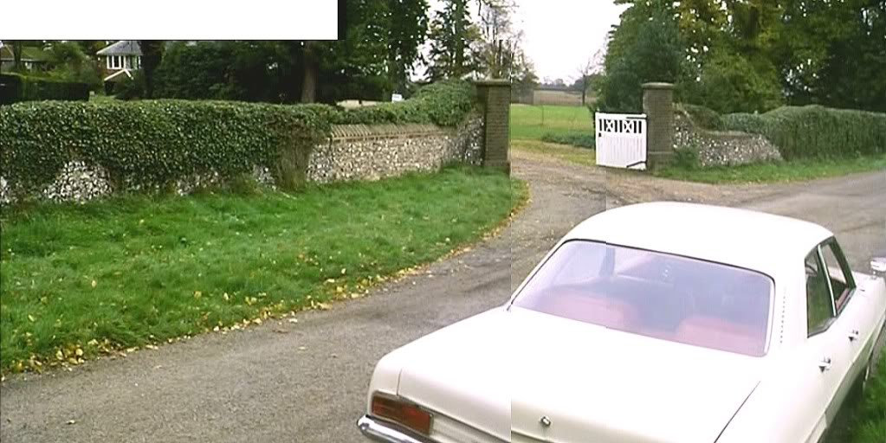
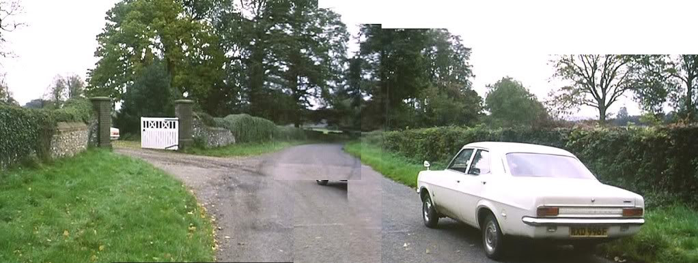
 The same two
cars seen here also appear at Fishpool Steet, St. Albans.
The same two
cars seen here also appear at Fishpool Steet, St. Albans.
RANDALL AND HOPKIRK [DECEASED]: You Can Always Find a Fall Guy
Unknown 1 - After escaping from the securtiy guards at St Ursulas Convent, in Jean's Mini, Jeff and Marty drive down a country road. When Marty sees that they are not being followed he suggests they pull over and read the documents (same stretch of road filmed from opposite ends).
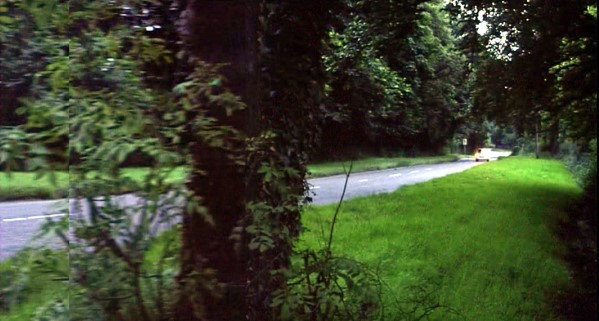
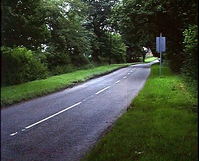
\ This could
be
This could
be
Unknown 2 - Miss Holiday and Yateman drive the captive Jeff in his Vauxhall to the W.E.R.C.
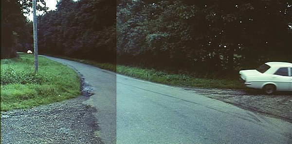
RANDALL AND
HOPKIRK [DECEASED]: Vendetta for a Dead Man
Unknown 1 -
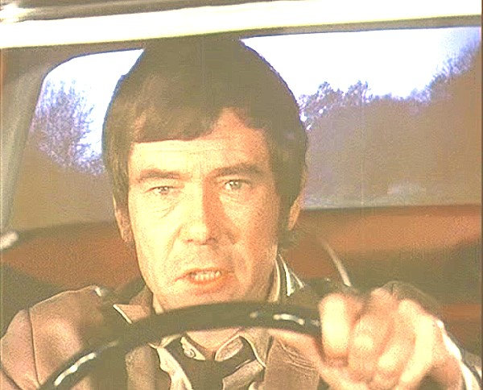
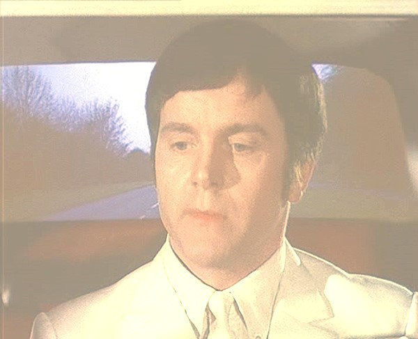
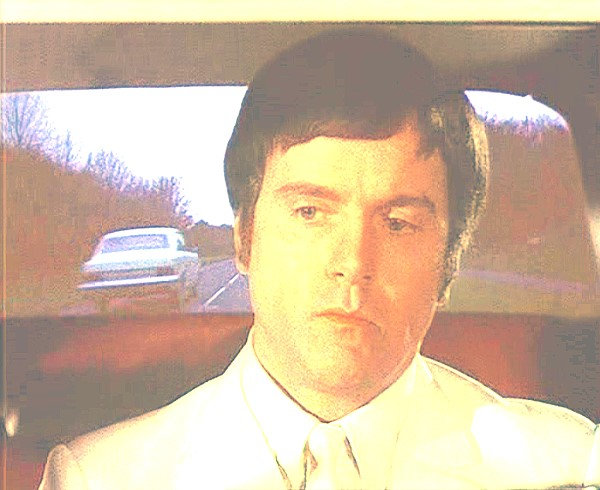
 It will help
if you drop us a line if you've seen this back plate in another
production.
It will help
if you drop us a line if you've seen this back plate in another
production.
Unknown 2 - Jeff and Marty follow Sam in the Vauxhall, Marty suggest they attempt to force off him the road (back projection).
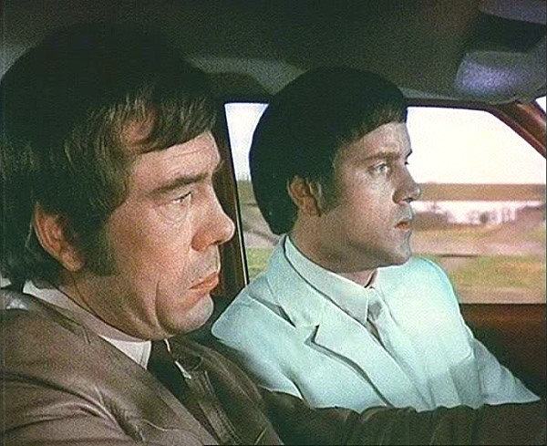
 World
Backgrounds back
projection 26985.
World
Backgrounds back
projection 26985.
Unknown 3 - Marty and Jeff go to check out Emil Cavello-Smith and park the Vauxhall outside a neighbour's house (back projection).
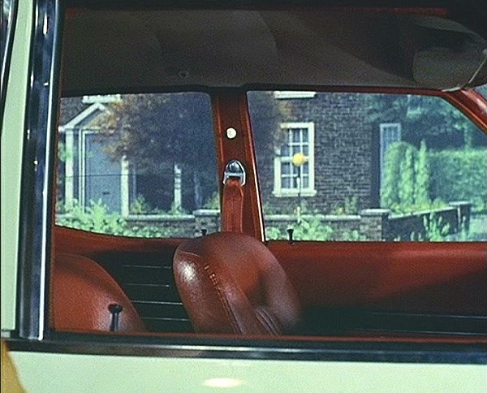
 There
is footage of the Vauxhall in
There
is footage of the Vauxhall in
Think you know a spot? Need a bigger image? Email me.
< Previous | Index | Avengerland | Next >
Copyright © 2003 Anthony R. McKay